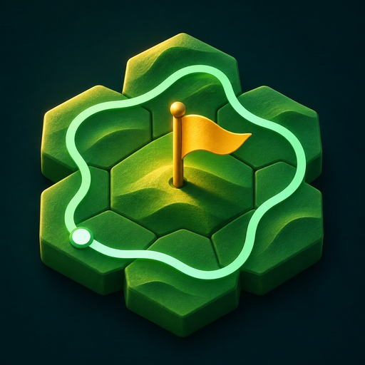

കാൽച്ചുവടുകളാൽ വട്ടം വരയ്ക്കൂ
മാപ്പിലെ കുത്തുകൾക്ക് ചുറ്റും ഓടി നിങ്ങളുടെ കൊടിയിലേക്ക് മടങ്ങൂ, അല്ലെങ്കിൽ സ്വന്തം പാത മുറിച്ചുകടക്കൂ. ഉള്ളിലെ ഷഡ്ഭുജ കളങ്ങൾ നിങ്ങളുടേതാകും.

RunBaseനിങ്ങളുടെ അയൽപക്കം. തികച്ചും പുതിയൊരു കളി.
വീട്ടിലേക്ക് നീളമുള്ള വഴിയിലൂടെ പോകാൻ ഒരു കാരണം.
അടുത്ത ഓട്ടം ചെറിയൊരു വിജയയാത്രയാക്കൂ. ഒരു വട്ടം പൂർത്തിയാക്കി അതിനുള്ളിലെ സ്ഥലം സ്വന്തമാക്കൂ, നിങ്ങളുടെ താവളം വളർത്തൂ — യഥാർഥ ലോകത്തിലെ ഓരോ വഴിയിലൂടെയും.
സൗജന്യം · പരസ്യങ്ങളില്ല · ആപ്പിനുള്ളിലെ വാങ്ങലുകളില്ല


ആപ്പ് സ്ക്രീൻഷോട്ട്
എന്തുകൊണ്ട് ഇത് നിങ്ങൾക്ക് ഇഷ്ടപ്പെടും
മാപ്പിലെ കുത്തുകൾക്ക് ചുറ്റും ഓടി നിങ്ങളുടെ കൊടിയിലേക്ക് മടങ്ങൂ, അല്ലെങ്കിൽ സ്വന്തം പാത മുറിച്ചുകടക്കൂ. ഉള്ളിലെ ഷഡ്ഭുജ കളങ്ങൾ നിങ്ങളുടേതാകും.
നിങ്ങളുടെ സ്ഥലം നാണയങ്ങൾ നേടിത്തരും. ഖനികളും മതിലുകളും ആസ്ഥാനത്തിന്റെ മെച്ചപ്പെടുത്തലുകളും ചേർക്കൂ. പിന്നെ പ്രദേശം കാക്കാനോ എതിരാളികൾ പിടിച്ചെടുത്തത് തിരിച്ചുപിടിക്കാനോ ഇറങ്ങൂ.
സ്വകാര്യ ഗെയിം സെഷനായി ആറ് അക്ഷരങ്ങളോ അക്കങ്ങളോ ഉള്ള കോഡ് പങ്കിടൂ. സ്ഥലത്തിനോ നാണയങ്ങൾക്കോ വേണ്ടി മത്സരിക്കൂ, അല്ലെങ്കിൽ പ്രതിമാസ ആഗോള സീസണിൽ ചേരൂ.
ഒന്ന് നോക്കൂ
യഥാർത്ഥ സ്ക്രീനുകൾ. ഉള്ളിലെ കാര്യങ്ങൾ കൂടുതൽ വ്യക്തമായി അറിയാൻ ഇത് സഹായിക്കും.


FAQ
നിങ്ങൾ ആരംഭിക്കുന്നതിന് മുമ്പ് ഉത്തരങ്ങൾ
അതെ. മാപ്പിലെ ഒരു കുത്തിന് ചുറ്റുമുള്ള ചെറിയ വട്ടം പോലും കണക്കാക്കാം. വട്ടം പൂർത്തിയാക്കുന്നതിനു മുമ്പ് സ്വന്തമാക്കാവുന്ന സ്ഥലം തത്സമയ പ്രിവ്യൂ കാണിക്കും.
വേറെ രജിസ്ട്രേഷൻ ഇല്ല. ഓൺലൈൻ കളി iCloud ഉപയോഗിക്കുന്നു. iCloud ഇല്ലാതെ പരിശീലന ഓട്ടക്കാർക്കെതിരെ ഓഫ്ലൈനിൽ പരിശീലിക്കാം.
ഇല്ല. ഓടിയാണ് സ്ഥലം നേടേണ്ടത്. നാണയങ്ങൾ കളിയിലൂടെയാണ് നേടുന്നത്; പരസ്യങ്ങളോ ആപ്പിനുള്ളിലെ വാങ്ങലുകളോ ഇല്ല.
നിങ്ങളുടെ GPS പാത ഫോണിൽ തന്നെ തുടരും. സ്വന്തമാക്കിയ ഷഡ്ഭുജ കളങ്ങൾ മാത്രമാണ് പങ്കിടുന്നത്; പൊതുമാപ്പിൽ ഉടമകളുടെ തിരിച്ചറിയൽ വെളിപ്പെടുത്തില്ല.
സൗജന്യം · പരസ്യങ്ങളില്ല · ആപ്പിനുള്ളിലെ വാങ്ങലുകളില്ല
iOS 18 അല്ലെങ്കിൽ പുതിയ പതിപ്പ് വേണം. ഓട്ടം രേഖപ്പെടുത്താൻ ലൊക്കേഷൻ അനുമതി വേണം; ഓൺലൈൻ കളി iCloud ഉപയോഗിക്കുന്നു. ഗതാഗതം ശ്രദ്ധിക്കൂ, സ്വകാര്യ സ്വത്തിനെ മാനിക്കൂ, സുരക്ഷിതമായ വഴി തിരഞ്ഞെടുക്കൂ.